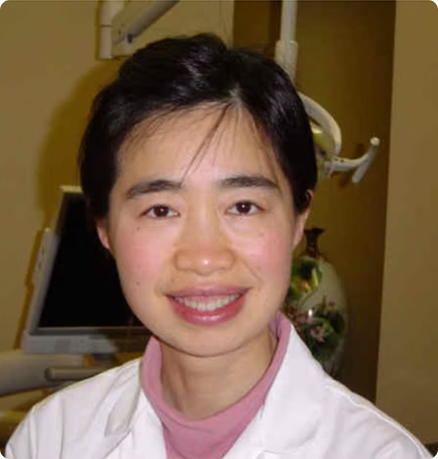

Healthy Teeth, Beautiful Smiles

Dr Ling Cao is a caring and gentle dentist dedicated to excellence in general, pediatric, and comesmetic dentisty.
Doctor of Dental Surgery - UCSF (2005)
Invisalign Certified
Member of: ADA & CDA
10+ years of experience
Published research
Patent in teeth bleaching